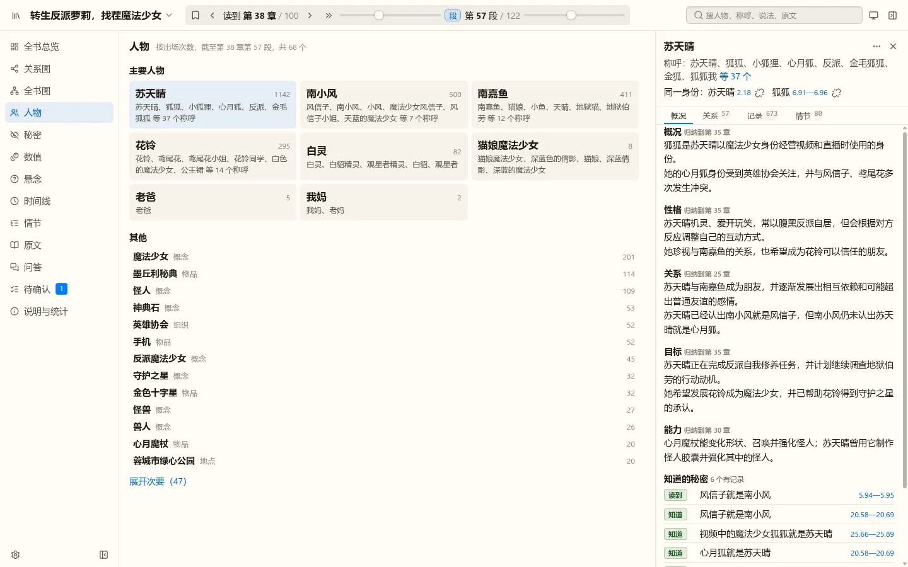
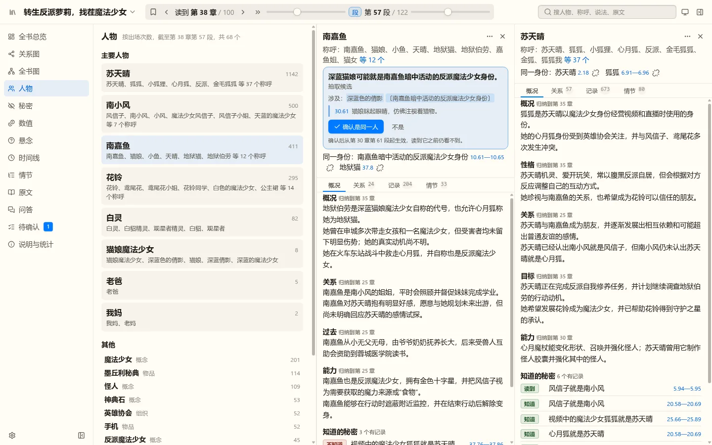
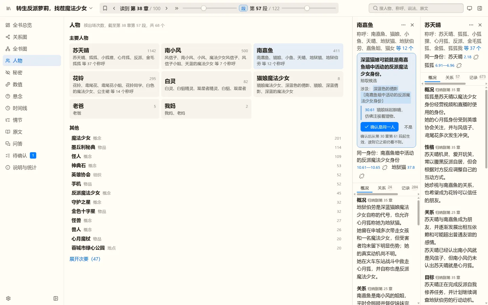
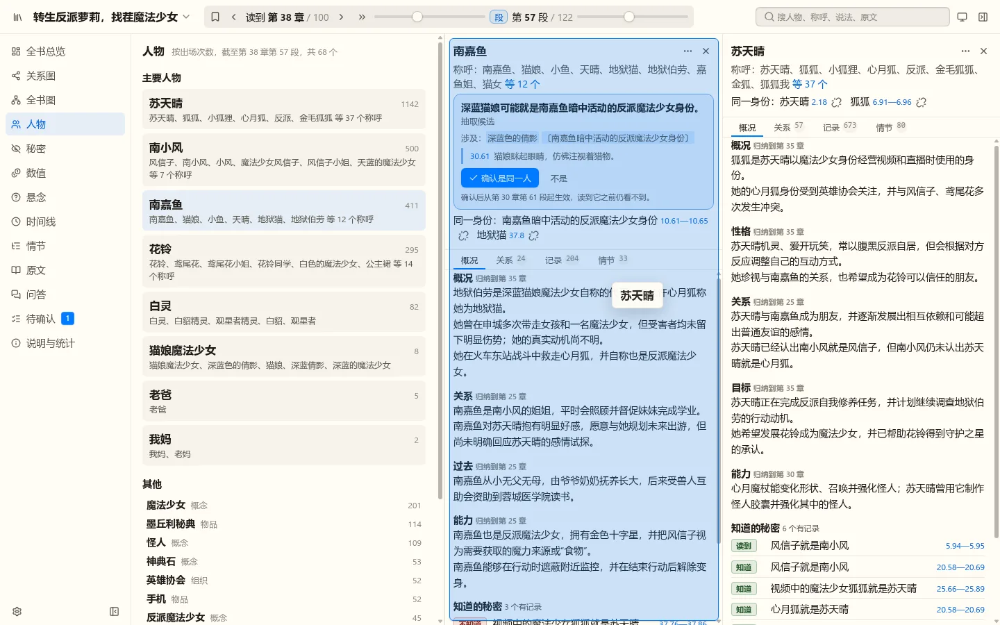

第 1 轮：nb-story 并排看卡片
现状与参照
现在：右侧详情一次一张卡

| 参照 | 做法 |
|---|---|
| VS Code | Ctrl（Mac 上 ⌘）点文件或右键“在侧边打开”，开在旁边的编组；之后普通打开进最近用过的编组；拖标签到另一组的半边 |
| 本应用工作台 | 拖标签时被拖的缩成卡片跟着指针，要放的地方盖一层落点指示，松手才换 |
| nb-story 现在 | 名字是按钮，单击开卡；关系图上右键有“某某的人物卡”；没有拖动 |
并排时右侧详情多宽？
推荐 A 两张各保持原宽：各占一半时每张只剩约 200 像素，内容挤成窄条，对照不了。
A 两张各保持原宽

1440 宽的窗口里正文从 850 缩到 450；关掉一张回到原宽。
B 宽度不变、各占一半

正文不动；每张卡约 200 像素。
第二张卡从哪里打开？
推荐 A 加 B：和 VS Code 的“在侧边打开”一样，键盘与右键都能到；拖名字可以以后加。
A Ctrl 或 ⌘ 点名字
开在另一半；已经并排时换掉另一半那张。
B 右键“在旁边打开”
名字与关系图的点上右键，菜单里多一项。名字现在没有右键菜单，要新加。
C 把名字拖到左半或右半
拖起正文里的名字或人物页的卡，放到右侧详情的哪一半就开在哪一半。
两张都开着时，普通点名字换哪一张？
推荐 A 最近点过的那一张：卡片里的名字换它自己那张，像在那一半里往下翻；和 VS Code 的“活动编组”一样。
A 最近点过的那一张
点过、滚过或在里面点过名字的那张算“最近”。正文里点名字换它。
B 总换左边那张
右边当作对照固定住，只有 Ctrl 点或右键才换右边。
拖卡片换边时这样提示，可以吗？
推荐同意：和工作台拖标签的“落点指示”一个样子，按住卡片头拖，松手两张对调。

直接做，不用答
| 哪里 | 怎么做 |
|---|---|
| 张数 | 最多两张 |
| 拖卡片头 | 放到另一半两张对调；放回自己那一半不动；Esc 取消 |
| 两张中间 | 有分隔条，可以拖动调两张的宽度 |
| 关掉一张 | 剩下那张占满右侧详情，宽度回到一张卡的宽度 |
| 窄窗口 | 详情浮起与手机时不并排，只显示最近点过的那一张；放宽后两张回来 |
| 放什么 | 人物卡、原文、段落、图节点四种详情都能放进任一半 |
| 地址栏 | 记两张，刷新与复制链接照旧 |
| 拖动手感 | 先做落点指示；实时让位等手感编排进 nb-layout（t49）之后再接，那时 nb-story 是第二个宿主 |
已定
- 右侧详情可以再开一张卡并排对照，卡片能拖到左右两半（2026-11-22）
- 三栏改用 nb-layout 的 NestedGrid，外观不变（t44）